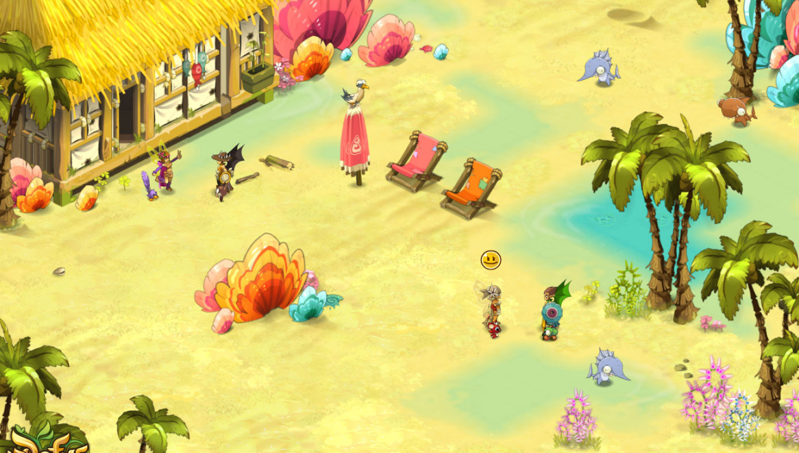
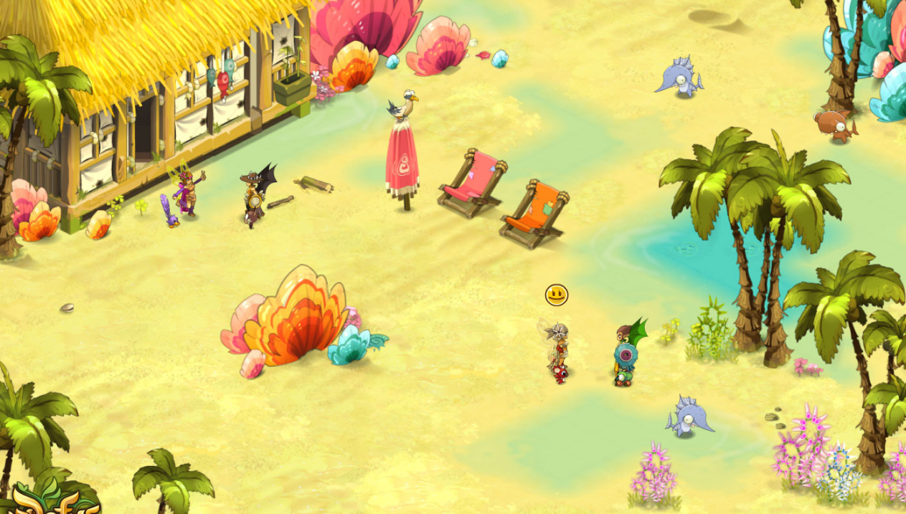

“Quand le chacha n'est pas là,
les rats bougris dansent.”
Dofus prend place dans le Monde des Douze, un univers médiéval-fantastique. Les
joueurs doivent
retrouver six Dofus primordiaux, des œufs de dragons conférant
une grande puissance à leur
porteur, qui sont dispersés aux quatre coins du monde.
Le jeu, en monde ouvert, laisse place
à la libre orientation des joueurs, pouvant
choisir de s'orienter dans le Joueurs contre Joueurs,
Joueurs contre Monstres
ou l'économie.
Dofus est un jeu vidéo RPG où les joueurs incarnent un ou plusieurs personnages.
En tant que
joueur, vous y retrouverez une multitude d'armes et d'équipements en
tous genres, une vingtaine de
métiers différents et plusieurs centaines de
monstres répartis en différentes zones sur les 10 000
cartes de jeu (portions de
carte, sur lesquelles l'on se déplace d'ailleurs comme sur une carte)
formant
l'univers de Dofus, dont 95 % ne sont accessibles qu'aux abonnés.
Les échanges commerciaux dans le jeu sont réglés avec la monnaie de Dofus, le
Kama. Il est
possible d'acheter ressources et items via les HDV (Hôtels De Vente),
mais aussi en procédant à des
échanges entre joueurs. Ces échanges peuvent
être de plusieurs natures : « objets contre objets » ou
« objets contre Kamas ».
Depuis l'arrivée des « Ogrines » ayant permis aux joueurs de posséder
plusieurs
comptes « gratuitement » et permettant donc à chacun d’être indépendant des
autres via
ce mode en plus de nombreux avantages par rapport aux joueurs
« classiques », ceux jouant avec
un seul compte, les échanges, le partage et
l'entraide se sont radicalement éloignés de l'esprit et de l’intérêt du MMO.

 


© 2023 Ankama. Tous droits réservés.
Conditions d'utilisation - Politique de confidentialité
Mentions Légales - Gestion des cookies